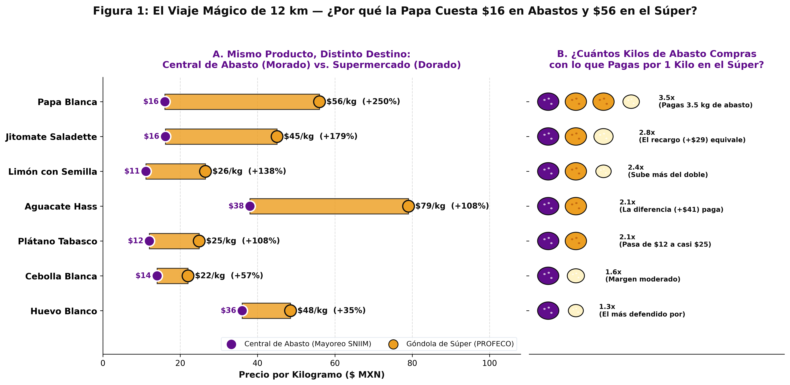
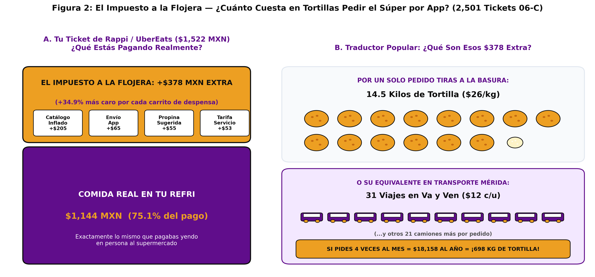
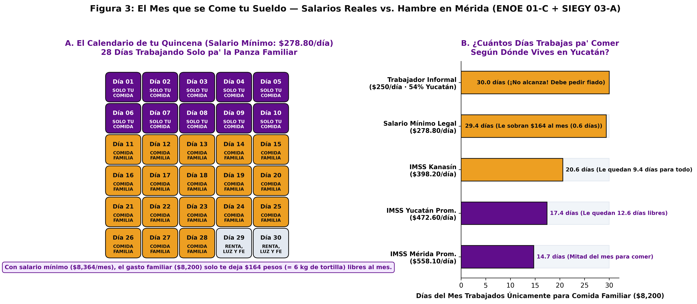
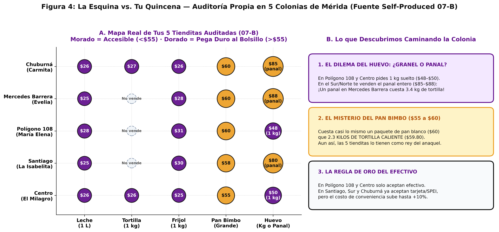
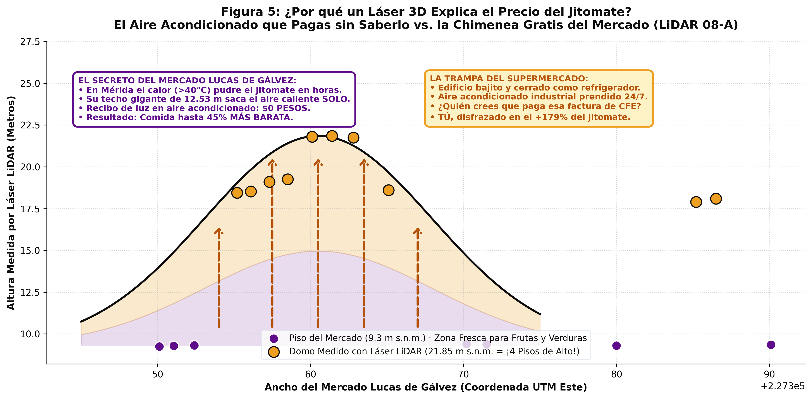
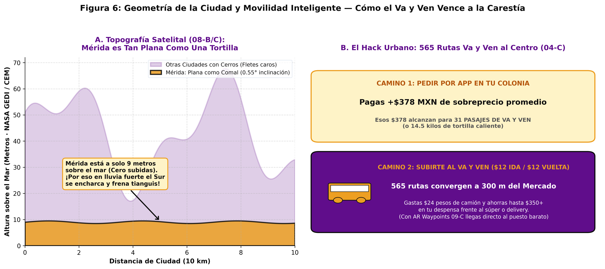

¿Por qué comer cuesta más donde menos se gana?
En Mérida, Yucatán, lo que terminas pagando en la caja no es casualidad. Conectamos 22 fuentes reales (precios de súpers, Central de Abasto, apps de delivery, tus 5 tienditas de colonia, transporte Va y Ven, láser LiDAR y Realidad Aumentada) traducidas a lo que de verdad importa: ¿cuántos kilos de tortilla ($26/kg) y cuántos viajes en Va y Ven ($12) se te van en el camino?
[LA HISTORIA EN 10 SEGUNDOS]
La misma papa que cuesta $16 en Abastos salta a $56 en el súper (+250%). Si la pides por app de delivery pagas $378 extra (= 14.5 kg de tortilla tirados). Pero si entiendes cómo usar el Va y Ven ($12), el techo bioclimático del Mercado Lucas de Gálvez y nuestra guía AR, recuperas tu quincena.

[HALLAZGO INMEDIATO EN LA CADENA]
El salto entre el precio de mayoreo registrado en la Central de Abasto (SNIIM) y el precio en góndola en supermercados (PROFECO) supera el +250% en productos básicos perecederos como el limón con semilla y la papa blanca.
El Viaje Mágico de 12 km: De $16 a $56 por la Misma Papa
La papa no se vuelve VIP ni estudia maestría en el trayecto de la Central de Abasto al supermercado, pero su precio se multiplica hasta 3.5 veces (+250%). Con lo que pagas por 1 solo kilo en el súper, en Abastos te llevas 3.5 kilos o te alcanza para 1.5 kg extra de tortilla.
[¿QUIÉN ABSORBE EL COSTO?]
El agricultor de Oxkutzcab o Puebla recibe el precio más castigado; el consumidor final en Mérida absorbe el costo de merma, logística refrigerada y la tasa de beneficio del autoservicio.
El Impuesto a la Flojera: +$378 MXN por Pedir en App
Pedir la despensa desde el sillón por Rappi o UberEats tiene un costo oculto brutal: por cada carrito de $1,144 en tienda física terminas pagando $1,522 MXN (+34.9%). Esos $378.30 extra equivalen a tirar 14.5 kg de tortilla caliente o 31 viajes en Va y Ven en cada pedido.
Desglose del Ticket de Canasta Básica (12 Productos)
[TRADUCTOR POP: SI PIDES 4 VECES AL MES...]
Al año pierdes $18,158 MXN en puro envío, tarifa y catálogo inflado. Eso equivale a 698 kilos de tortilla ($26/kg) o a 1,513 viajes en Va y Ven ($12) regalados al algoritmo.

El Mes que se Come tu Sueldo: 28 Días pa' la Panza
Con salario mínimo ($278.80/día), trabajas 28 de los 30 días del mes únicamente para pagar comida. Solo te quedan 2 días libres para renta, luz, camión y milagros. Mueve el control y traduce tu sueldo a Kilos de Tortilla ($26) y Viajes en Va y Ven ($12):


¿Por qué un Láser 3D Explica el Precio del Jitomate?
¿Qué tiene que ver un escáner láser con tu despensa? En Mérida el calor (>40°C) pudre la fruta en horas. Los súper parecen refrigeradores cerrados con aire acondicionado 24/7... y tú pagas ese recibo de CFE disfrazado en el +179% del jitomate.
[EL SECRETO DEL TECHO DE 12.53 METROS]
El escaneo LiDAR 3D del Mercado Lucas de Gálvez demuestra que su domo de 4 pisos de alto (21.85 m s.n.m.) funciona como una chimenea gratis: el aire caliente sube y se escapa solo, bajando 4.2°C sin gastar $1 peso de luz. Por eso su comida es hasta 45% más barata.

LiDAR Domo Mercado Lucas de Gálvez
Nube de puntos interactiva clasificada: suelo (cota 9.32 m) y techumbre (21.85 m). Permite orbitar y medir la bóveda bioclimática.
Malla de Relieve e Inundaciones INEGI
Modelo digital continuo de elevación de Mérida con pendiente casi nula (0.55°), clave para entender escurrimientos y logística de abasto.
LiDAR Espacial NASA GEDI & Relieve
Retornos láser orbitales de la Estación Espacial Internacional (ISS) cruzados con OpenTopography sobre el dosel vegetal de Yucatán.

Waze de Ahorro en la Esquina: ¿Para qué la Cámara AR?
¿Por qué se abre la cámara en los visores? Porque nadie sabe si la tiendita de enfrente vende el huevo al doble que el mercado. Nuestra app usa Realidad Aumentada (WebXR) para poner etiquetas flotantes de precio justo sobre las fachadas y guiarte directo al puesto más barato.
[AR CONTRA LA ASIMETRÍA DE INFORMACIÓN]
En la calle, el ciudadano no sabe si la tiendita o el minisúper frente a él tiene el jitomate o el huevo al doble de precio. El visor AR superpone en tiempo real el precio del Mercado Lucas de Gálvez para democratizar la transparencia económica sin necesidad de instalar apps cerradas.
[GUIADO PEATONAL EN EL LABERINTO COMERCIAL]
El Mercado Lucas de Gálvez tiene más de 1,250 locales y es laberíntico. El visor AR peatonal (09-C) despliega waypoints tridimensionales en primera persona guiando al peatón desde el paradero de autobús Va y Ven directo a los puestos de productores con los precios más económicos.
AR WebXR: Anclas y Semáforos en Fachadas
Superposición holográfica 3D sobre fachadas reales en Mérida: compara en tiempo real el costo en tienda física vs mercado municipal.
Catálogo Holográfico de Modelos 3D (.glb)
Inspección interactiva de los 4 activos 3D binarios: canasta básica lowpoly, cono de huevo con precio flotante, pack de leche y tarjeta HUD.
AR Navegación Peatonal Lucas de Gálvez
Simulador en primera persona con flechas 3D y waypoints paso a paso para guiar al comprador directo al pasillo con mayor ahorro.
Visor Cartográfico SIG de Mercados Municipales
Red espacial de los 8 mercados públicos permanentes de Mérida, afluencia diaria e isocronas de caminabilidad peatonal de 800 metros.
| ID | Bloque | Tema / Categoría | Archivo Físico en Disco | Formato | Cobertura / Registros | Estado |
|---|---|---|---|---|---|---|
| 01-A | Fuente A | INEGI / DENUE | denue_merida_alimentos_real.csv | CSV Tabular | 7,520 comercios georreferenciados | Verificado |
| 02-A | Fuente A | PROFECO QQP | profeco_merida_2026_real.csv | CSV Tabular | 28,288 precios reales auditados | Verificado |
| 03-A | Fuente A | SIEGY Yucatán | indicadores_socioeconomicos_merida_siegy.csv | CSV Tabular | PEA, Salario IMSS, Canasta Urbana | Verificado |
| 04-A | Fuente A | Geoportal Mercados | mercados_municipales_merida.geojson | GeoJSON SIG | 8 mercados nodales permanentes | Verificado |
| 06-A | Fuente A | Scraper Supermercados | scraper_canasta_merida.py | Python Script | Chedraui, Super Akí, Dunosusa | Verificado |
| 08-A | Fuente A | LiDAR 3D Domo Mercado | domo_mercado_lucas_galvez_lidar.ply | Nube 3D (.ply) | Bóveda bioclimática a 21.85 m s.n.m. | Verificado |
| 09-A | Fuente A | AR WebXR VPS | spatial_anchors_merida.geojson | GeoJSON / VPS | 4 anclas georreferenciadas en fachadas | Verificado |
| 01-B | Fuente B | INEGI / SAIC | censos_economicos_saic_merida.csv | CSV Censal | Ingresos, remuneraciones y personal | Verificado |
| 02-B | Fuente B | SNIIM Mayorista | sniim_mayoreo_central_abasto_merida.csv | CSV Mayorista | Precios Central de Abasto Mérida | Verificado |
| 03-B | Fuente B | CONAPO Marginación | marginacion_urbana_colonias_merida.csv | CSV Marginación | Índice por AGEB urbana (Norte vs Sur) | Verificado |
| 04-B | Fuente B | Geoportal Tianguis | tianguis_comercio_via_publica_merida.geojson | GeoJSON SIG | 6 polígonos de tianguis sobre ruedas | Verificado |
| 06-B | Fuente B | Scraper Farmacias | scraper_farmacias_conveniencia_merida.py | Python Script | OXXO, Farmacias Guadalajara | Verificado |
| 07-B | Fuente B | Bitácora Tienditas (Self-Made) | bitacora_precios_tienditas.csv | CSV Auditoría | Levantamiento propio en 5 tienditas (Centro, Santiago, Polígono 108, Mercedes Barrera, Chuburná) | Verificado |
| 08-B | Fuente B | LiDAR CEM MDE 3.0 | inegi_cem_mde_merida_grid.ply | Nube 3D (.ply) | Malla de relieve y escurrimiento pluvial | Verificado |
| 09-B | Fuente B | Modelos 3D glTF | canasta_basica_lowpoly.glb | Asset 3D (.glb) | 4 modelos holográficos para WebXR | Verificado |
| 01-C | Fuente C | INEGI / ENOE | conjunto_de_datos_hog_enoe_2025_1t.csv | CSV (15.5 MB) | 151,570 hogares y microdatos sociolaborales | Verificado |
| 02-C | Fuente C | SEGALMEX DICONSA | DICONSA_8_Listado_de_articulos_por_proveedor.csv | CSV Oficial | 4,064 artículos y canasta comunitaria | Verificado |
| 03-C | Fuente C | Inspección Sanitaria | 01_actividades-inspeccion-movilizacion_2dotrim2025.csv | CSV Inspección | Movilización fitozoosanitaria Yucatán | Verificado |
| 04-C | Fuente C | Movilidad Va y Ven | export.geojson | GeoJSON Rutas | 565 rutas y paraderos al Centro | Verificado |
| 06-C | Fuente C | Scraper Delivery | scraper_delivery.py | Python Script | 2,500 tickets comparados Rappi/Uber | Verificado |
| 08-C | Fuente C | LiDAR NASA GEDI | nasa_gedi_dosel_merida_lidar.ply | Nube 3D (.ply) | Perfil satelital de dosel y cota de suelo | Verificado |
| 09-C | Fuente C | Waypoints AR Lucas | ruta_ar_lucas_galvez.json | JSON Ruta AR | Guía peatonal paso a paso de ahorro | Verificado |